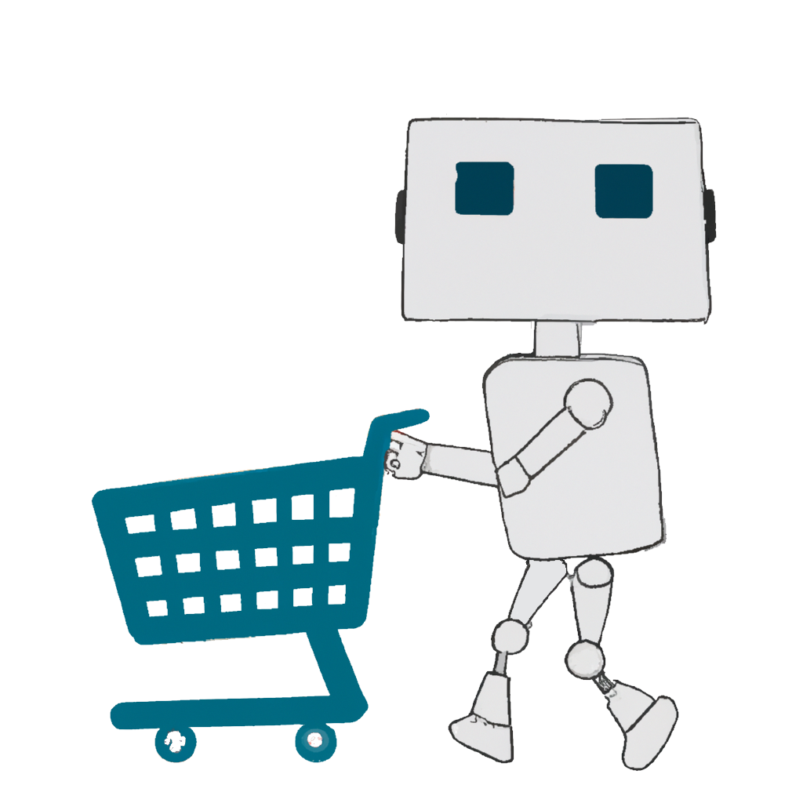

Rodrigo Estrella — Data Scientist & Algorithmic Artist
Data Analytics · Business Intelligence · R, Power BI & SQL
Rodrigo
Estrella
Magíster en Economía · +7 años construyendo sistemas de datos automatizados y productos analíticos en R, Power BI y SQL.
Diseño soluciones escalables que generan impacto real en el negocio.
MA in Economics · 7+ years building automated data systems and analytics products in R, Power BI & SQL.
I design scalable data solutions that drive measurable business impact.
Side projects Side projects

Atelier Algorítmico Algorithmic Atelier
Aplicación para crear arte algorítmico en tiempo real. Generá obras únicas parametrizando algoritmos visuales. App to create algorithmic art in real time. Generate unique pieces by tweaking visual algorithm parameters.
Ver appView app
Car Scraper
Robot que rastrea precios del mercado automotriz y los presenta en un dashboard analítico para comparar tendencias. Bot that scrapes the automotive market and presents prices in an analytics dashboard to compare trends.
Ver appView app
Precios Claros App Precios Claros App
Análisis de datos abiertos de precios de supermercados en Argentina. Exploración y comparación de costos por categoría. Open data analysis of supermarket prices across Argentina. Explore and compare costs by product category.
Ver appView app
Monitor de Bebidas Wine Monitor
Dashboard interactivo para seguimiento y análisis de precios de bebidas. Visualizaciones en tiempo real con R Shiny. Interactive dashboard for tracking and analyzing beverage pricing data. Real-time visualizations built with R Shiny.
Ver appView appMás allá del Dato Beyond Data